呉戦災を記録する会 保存別館
永続保存が目的の、バックアップサイトです。
代表：朝倉 邦夫
本館：https://kure-sensai.net/
保存別館：https://kure-sensai.github.io/ このサイト
動画別館：https://archive.org/details/kure-sensai/ ビデオ視聴 専用 外部サイト
YouTube：@呉戦災
【はじめに】
1945年、アメリカ軍が日本を、呉市を猛爆撃しました。
たくさんの市民が殺され、街は焼け野が原となりました。
日本の兵士も1931年～1942年～1945年の「15年戦争」で中国やアジアで、
多くの人を殺しました。
戦争はゴメンです。でも、今また、戦争の準備が進められており、
呉市は、呉軍港と海上自衛隊の拡充で、戦争の最前線にたっています。
戦争で国富の６割・死者３３０万人以上の犠牲を払い、勝っても負けても
２度と戦争はしないと誓い、戦争放棄を憲法で定めました。
最近の世界では、ウクライナ戦争・ガザ戦争など悲惨な破壊と殺りくで、
国の防衛・自衛戦争は勝てない戦争でも、闘う価値があるのか、どうか？
日本の敗戦時に立ち返り、熟慮することは必要でしょう。
かつての呉空襲の状況と、戦災の悲惨な体験を見てみましょう。
呉の空襲は米軍の対日戦略目標に従って、順次、行なわれました。
呉は、日本本土で、沖縄戦と共に、唯一の本格的な戦場になった都市です。
中国地方で、最初の本格的な空襲が行なわれました。
【呉空襲の状況】
 呉の歴史
呉の歴史
 呉空襲の詳細
呉空襲の詳細
（１）呉空襲の特色と米軍の日本空襲
・
米軍の日本空襲の特色
・
呉空襲の特色
・
防空体制
・
「米軍資料に記録された呉空襲」 工藤洋三氏提供
（２）主な空襲
・
呉地区最初の警戒警報・空襲警報の発令(1944年6月15日)
・
呉軍港海空戦(1945年3月19日)
・
機雷敷設攻撃(1945年3月30日)
・
広海軍工廠・第11海軍航空廠爆撃(1945年5月5日)
・
呉海軍工廠造兵部爆撃(1945年6月22日)
・
呉市街地･夜間無差別焼夷弾爆撃(1945年7月1日)
・
呉沖海空戦(1945年7月24-28日)
・
米軍捕虜(1945年3月19-7月28日)
（３）戦争末期、直後
・ 投下された米軍ビラ
・ 呉市を占領した米軍による「呉市民尋問録」
・
戦後、政府が行った防空体制の総括
【書籍】
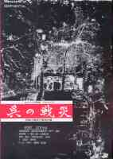
 呉の戦災
呉の戦災
－ あれから半世紀 くりかえすな －
呉戦災展実行委員会 編（1995年） Ａ４版 写真資料集 ５３ページ
この本は、呉の歴史、戦争体制、呉空襲、今の呉を、写真や各種資料を用いて、
客観的に、コンパクトにまとめたものです。
 黒い盆地 呉市民の戦災応募体験記と資料
黒い盆地 呉市民の戦災応募体験記と資料
呉戦災を記録する会 編、 くれえばん出版（1996年） Ｂ５版 190ページ
この本は、被災５０周年を記念し、市民から募集して、呉で初めて出版された呉空襲の体験記です。
資料として、呉市及び、アメリカ側の呉空襲に関する基本的な資料を付けています。
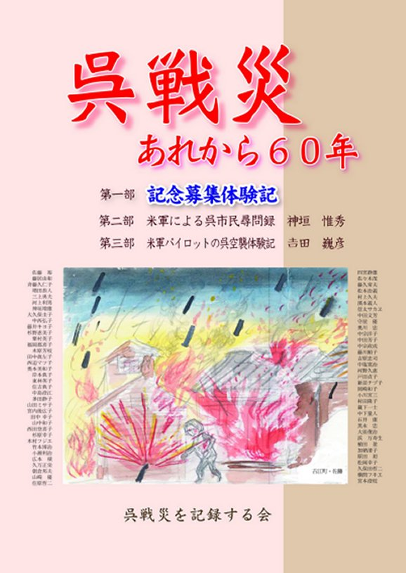
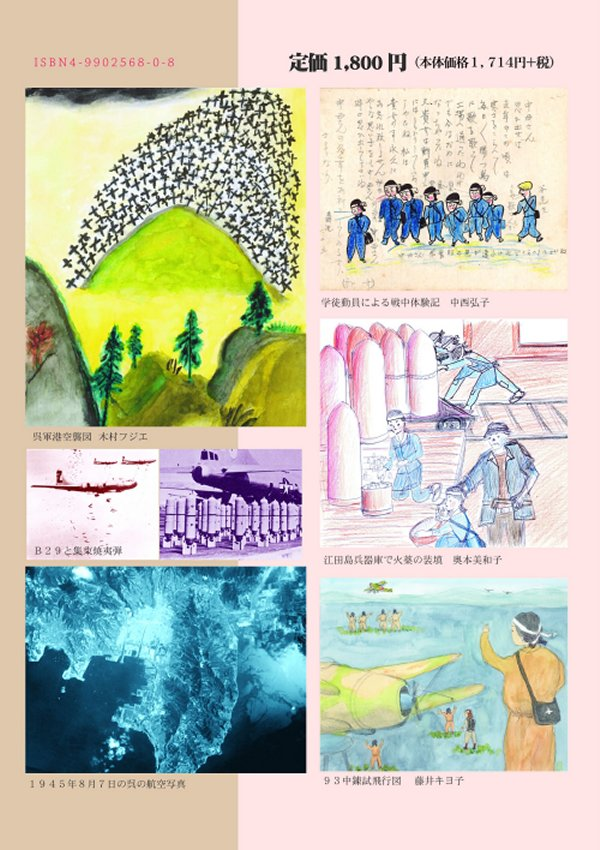
「呉戦災ーあれから60年ー」
 「聳ゆるマスト」 小栗 勉 著
「聳ゆるマスト」 小栗 勉 著
 「あめ と かぜ と」 広島県戦前左翼運動の手記 岩佐寿一 著
「あめ と かぜ と」 広島県戦前左翼運動の手記 岩佐寿一 著
【ビデオ】視聴は、Internet Archive(外部サイト)に飛びます。
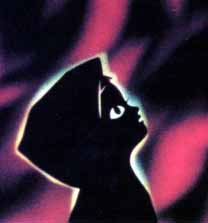
赤い月の街 ー 呉空襲 ー（35分）
呉戦災を記録する１フィート運動呉市民の会 制作･著作 （1986年）
原版は国立映画博物館に収納され、記録映画として保存されています
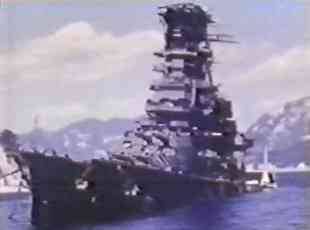
「呉空襲の被害状況」米国戦略爆撃調査団報告（解説・BGM付き）（30分、280MB）
解説：呉海軍工廠関係 ：林 茂
：呉軍港周辺の艦船 ：武智 碩一
：BGMと画像修正 ：竹内 由渡利
呉戦災を記録する会 制作･著作（1985年）（米国立公文書館所蔵）
戦後、米軍は、偵察写真と比較しながら、爆撃効果を具体的に調査して、
今後の戦争に役立てるため、映画に記録を残しました。三村 明 撮影
 「戦後日本の原風景」 Vol.9「瀬戸内の戦場」の一部を抜粋紹介
「戦後日本の原風景」 Vol.9「瀬戸内の戦場」の一部を抜粋紹介
呉空襲（7分30秒）
特殊潜航艇の「P基地」「Q基地」
映像資料・米国立公文書館
制作著作・株式会社 ドキュメンタリー工房（1994年）
ナレーター・玉井 孝 、 話・朝倉邦夫
（「戦後日本の原風景」の著作権者＝株式会社 ドキュメンタリー工房から掲載許可を受けています。）
 米軍フィルム "Kure naval base 1945"「1945年の呉軍港」
米軍フィルム "Kure naval base 1945"「1945年の呉軍港」
米軍は、呉空襲の成果をどのように伝えたか
・RG 208 UNITED NEWS ROLL 172
・RG 208 UNITED NEWS ROLL 180
【平和教育】
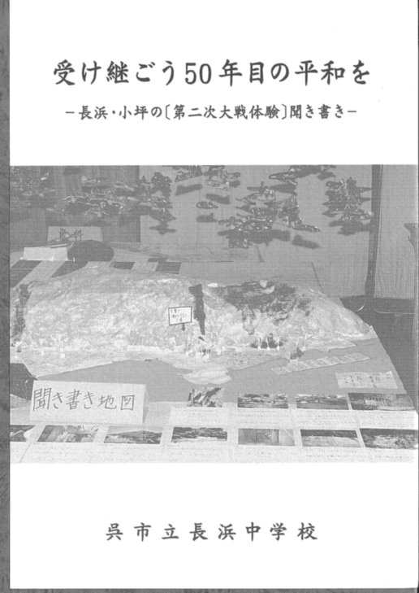
「受け継ごう50年目の平和を」
呉市立長浜中学校（現・呉市立広南中学校）
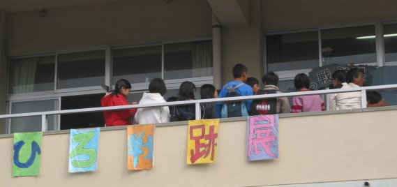
白岳小学校の平和教育（広空襲の学習）「ひろ戦跡展」
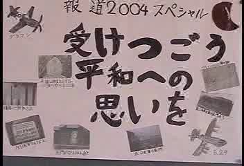
６年生 制作ビデオ「ひろ戦跡ニュース・受け継ごう平和への思いを」
【反戦平和運動】
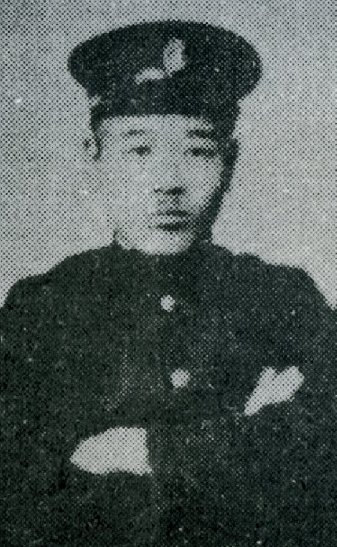
戦前の反戦平和運動1
 戦前2「戦争に反対して、命がけで活動した人たちの記録」
戦前2「戦争に反対して、命がけで活動した人たちの記録」
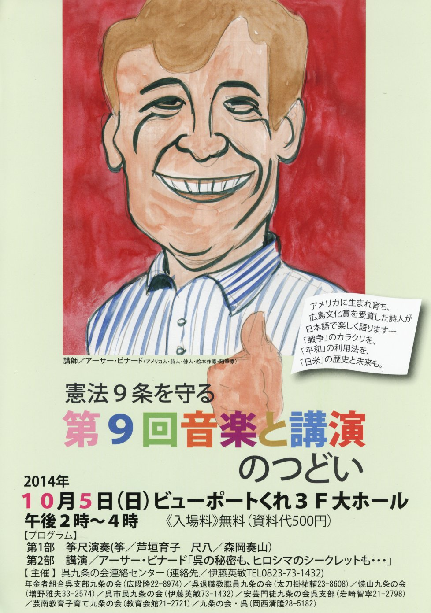
戦後の反戦平和運動
紙しばい
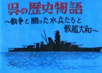
「呉の歴史物語 ～ 戦争と闘った水兵たちと戦艦大和 ～」 制作：是恒高志
【呉戦災を記録する会】
 「呉戦災を記録する会」の活動紹介ビデオ
「呉戦災を記録する会」の活動紹介ビデオ
1)
米軍フィルム紹介・呉空襲の惨状（2分5秒、9.7MB）
2)
記録する会の活動と1フィート運動（4分7秒、19.3MB）
3)
呉空襲の被害と１フィート運動（2分11秒、10.3MB）
4)
呉空襲の被害と記録する会の運動（4分52秒、22.8MB)
5)
呉空襲・30周年記念展（6分11秒、29MB）
6)
40周年記念呉空襲展（1分6秒、2.2MB）
7)
呉空襲50周年（3分38秒、17MB）
8)
50周年記念・呉空襲の記録活動（8分11秒、37.9MB）
9)
50周年目の呉空襲と「黒い盆地」（7分14秒、37MB）
10)
60周年目の呉空襲（50.2MB）
11)
60周年目前の呉空襲記念特集（6分48秒、51MB）
12)
呉戦災60周年記念「体験記をお寄せください」（10,7MB）
13)
次世代に語り継ぐ呉空襲（9分30秒、110MB）
14) 未来に残す 戦争の記憶 呉空襲
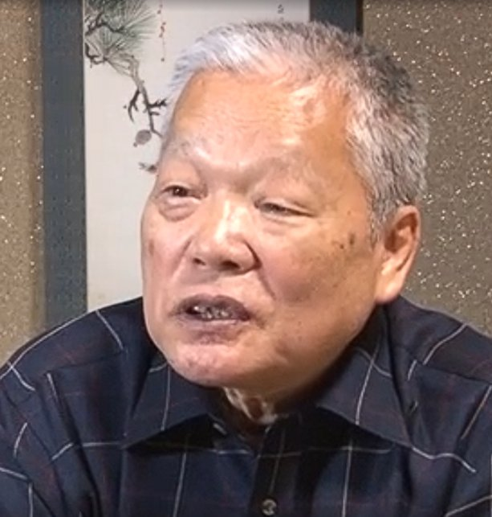
『呉戦災を記録する会』の歩み
【富山戦災】
 中山伊佐男さん は米軍資料から見た市街地（都市）空襲を解説。
中山伊佐男さん は米軍資料から見た市街地（都市）空襲を解説。
「無差別爆撃」ではない。住民殺傷に目的をしぼった「差別爆撃」だった。
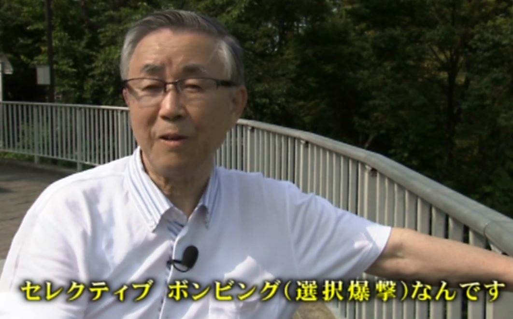
終戦70年ニュース、中山伊佐男さん